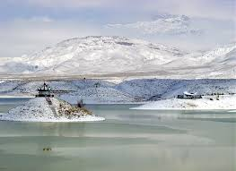
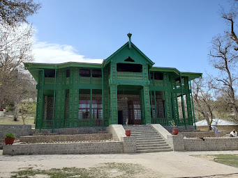

Five Famous Places in Quetta
Hanna Lake
A picturesque lake surrounded by hills, perfect for boating.
Quetta Market
Promotes Balochi culture through art exhibitions and performances, offering a vibrant showcase of local artistic expressions.
Ziarat
Famous for its juniper forests and the Quaid-e-Azam residency.
Kund Malir
A scenic beach with golden sands, ideal for relaxation.
Balochistan Arts Council
Mini Fort, a historic site in Quetta, offers a glimpse into the region's rich past with its well-preserved architecture and cultural significance.